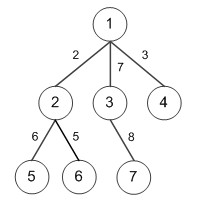
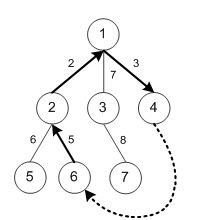

HDU4575. Changsha Marathon
内存限制：4000/2000 MS (Java/Others) 时间限制：32768/32768 K (Java/Others)
题目描述
Changsha is a beautiful city surrounded by mountains and rivers, forming a charming scenery. There are many tourist attractions in Changsha: Yuelu Academy, the predecessor of Hunan University, which is one of the four most famous academies in China. It was established in 976A.D. in Northern Song Dynasty. Juzizhou Island (Orange Isle) is the world's longest inland river isle which lies in Xiangjiang River and it is famous for the famous poet Qinyuanchun-Changsha written by Chairman Mao. Mawangdui is a famous archaeological site that contains the tombs of three people from the Western Han Dynasty. The tomb of Xin Zhui is best preserved among the three with a complete cosmetic set, lacquered pieces and finely woven silk garments. Huogongdian represents the Huxiang culture and Chuwu culture, Hunan’s geography culture and Hunan’s distinctive food culture. Tourists can have a taste of typical Hunan cuisine in it.
Every year the city holds a marathon. When planning the route, the organizers wish to go pass some tourist attractions to make it more enjoyable to attract more athletes and audience. Changsha can be treated as a graph consisted of N intersections and many bidirectional roads. A road connects two intersections i and j with length Wi,j. However, to reduce the impact to the daily traffic, only N-1 roads specified by the local government which can connect all N intersections are allowed to be used as the route. And the intersections with only one adjacent intersection are on the west bank of Xiangjiang River and there are ferries only at these intersections. The marathon starts at the intersection called Red East Square (marked as S) in Hunan University by convention. The organizers do not want the route pass any road twice, so the marathon has to be separated into two sections, the first section and the second section. Two different points have to be selected from intersections on the bank to act as the half end point S1 and the half starting point S2. The first section starts from S and end in S1. The second section starts from S2 and end in S. The organizer will use ferryboats to transport athletes from S1 to S2 as required by the government.
Considering the safety, some supply points are to be set on some intersections on each half section and there must be a supply point set on S, S1 and S2.
According to scientific research, the most suitable distance between two adjacent supply points is L and the organizers want to minimize the evaluation of the route. For each section, the evaluation from the starting point to rest point i is marked as Ei, and where j is the previous supply point on the route,
where j is the previous supply point on the route, means the sum of the roads’ length on the route from intersection j to i. The evaluation of the starting point is zero. The evaluation of a section equals to the evaluation from its starting point to end point.
means the sum of the roads’ length on the route from intersection j to i. The evaluation of the starting point is zero. The evaluation of a section equals to the evaluation from its starting point to end point.
Your task is to select S1, S2, and the supply points to minimize the total evaluation of both sections.
Every year the city holds a marathon. When planning the route, the organizers wish to go pass some tourist attractions to make it more enjoyable to attract more athletes and audience. Changsha can be treated as a graph consisted of N intersections and many bidirectional roads. A road connects two intersections i and j with length Wi,j. However, to reduce the impact to the daily traffic, only N-1 roads specified by the local government which can connect all N intersections are allowed to be used as the route. And the intersections with only one adjacent intersection are on the west bank of Xiangjiang River and there are ferries only at these intersections. The marathon starts at the intersection called Red East Square (marked as S) in Hunan University by convention. The organizers do not want the route pass any road twice, so the marathon has to be separated into two sections, the first section and the second section. Two different points have to be selected from intersections on the bank to act as the half end point S1 and the half starting point S2. The first section starts from S and end in S1. The second section starts from S2 and end in S. The organizer will use ferryboats to transport athletes from S1 to S2 as required by the government.
Considering the safety, some supply points are to be set on some intersections on each half section and there must be a supply point set on S, S1 and S2.
According to scientific research, the most suitable distance between two adjacent supply points is L and the organizers want to minimize the evaluation of the route. For each section, the evaluation from the starting point to rest point i is marked as Ei, and
where j is the previous supply point on the route, means the sum of the roads’ length on the route from intersection j to i. The evaluation of the starting point is zero. The evaluation of a section equals to the evaluation from its starting point to end point.Your task is to select S1, S2, and the supply points to minimize the total evaluation of both sections.
输入格式
There are multiple test cases.
For each test case the first line contains two integers, N, L. (1<=N<=20000, 1<=L<=109)
The next N-1 lines with 3 integers, U, V, W, describes that a bidirectional road connects intersection U and V with distance W. (1<=U, V<=N, 1<=W<=103)
Red East Square (S) is always numbered 1. The input will finish with the end of file.
For each test case the first line contains two integers, N, L. (1<=N<=20000, 1<=L<=109)
The next N-1 lines with 3 integers, U, V, W, describes that a bidirectional road connects intersection U and V with distance W. (1<=U, V<=N, 1<=W<=103)
Red East Square (S) is always numbered 1. The input will finish with the end of file.
输出格式
For each case the output contains only one line, the evaluation of the best plan rounded to the second digit after the decimal point. If there is no solution, output -1.
样例
样例输入
7 4
1 2 2
1 3 7
1 4 3
2 5 6
2 6 5
3 7 8样例输出
7.00
Hint
The sample solution:
